AI Academy · Level 4 · Grade 9 · Week 19 · Student lesson
Regression and Residuals
Learn to understand, design, build, test and explain AI systems responsibly.
Project: Responsible Plant Classifier
Before you start
Use signed subtraction: 7−10=-3.
Plan time to read, investigate and explain. Keep predictions separate from observations.
Student lesson · 1 of 16
Your mission
Your learning target
I can distinguish numeric prediction from classification.
I can calculate signed residuals with a stated convention.
I can use residual patterns to question a model.
Remember before reading
Close your notes first. A rough first answer helps us choose the right starting point; it is not a score for your ability.
Without opening the old lesson, explain one key idea from Error Analysis. Give an example and a mistake that the idea helps you avoid.
Without opening the old lesson, explain one key idea from Accuracy and Imbalance. Give an example and a mistake that the idea helps you avoid.
Without opening the old lesson, explain one key idea from Train a Classifier. Give an example and a mistake that the idea helps you avoid.
After trying, check the relevant lesson or ask your teacher. Change the part of your explanation that the evidence shows was wrong.
Regression predicts a number; a residual records signed error and reveals direction as well as size.
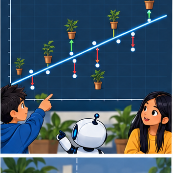
Builder name and experiment date:
Readiness for the connected explanation
What does a class label predict?
This week’s end goal
By the end, I can explain regression and residuals using a traced example and a stated limitation.
Student lesson · 2 of 16
Notice the evidence
PICTURE ENTRY
Notice → Predict → Explain
Begin with visible evidence; do not explain more than the picture and information support.
Name three visible details without interpreting them.
Predict the data, model, or evaluation decision being made.
Identify one hidden assumption that could change the result.
State what evidence would confirm or reject your prediction.
My prediction and supporting evidence:
A closer explanation
A school garden example predicts plant height in cm from recorded conditions. The target is numeric, so a prediction can be too high or too low by different amounts. Define residual as observed minus predicted. Keep units and the sign convention visible; some software uses the opposite error convention.
Use fictional classroom data throughout this investigation. Keep the task, units, reference labels and data split visible as you reason. Earlier weeks supplied the model-building process; this week examines regression and residuals.
Student lesson · 3 of 16
See how it works
ML MECHANISM
Input → Model → Evidence
Trace the information, fitted behavior, and evaluation proof separately.
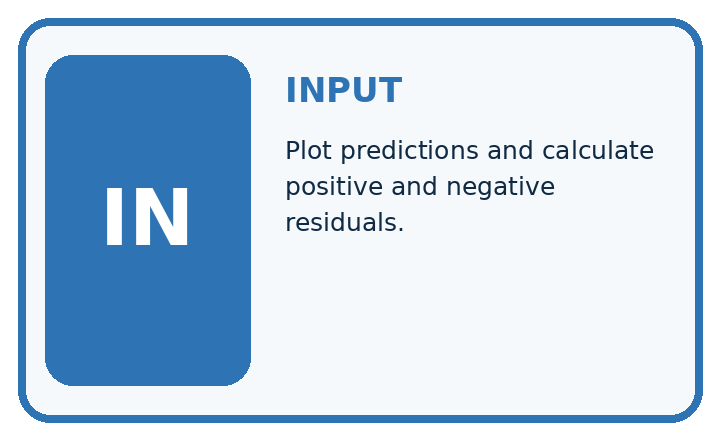
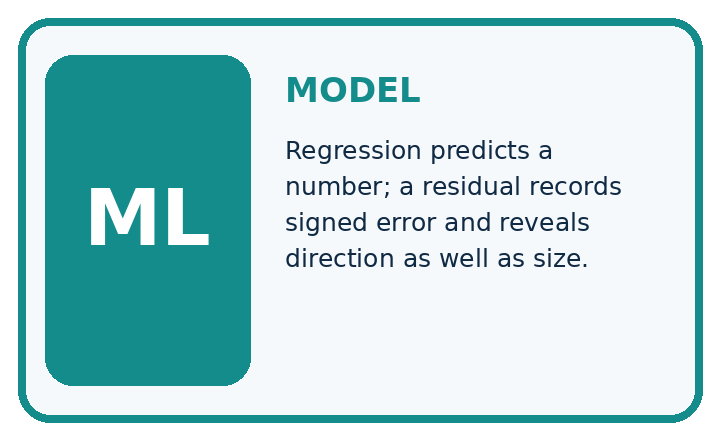
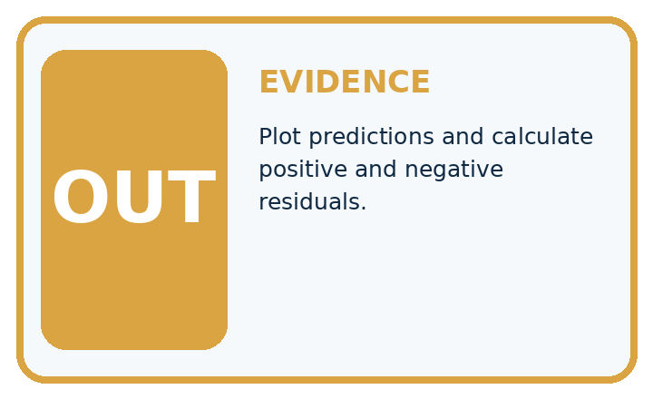
QUESTION Plot predictions and calculate positive and negative residuals.
MODEL IDEA Regression predicts a number; a residual records signed error and reveals direction as well as size.
PROOF NEEDED Use an unseen case, visible calculation, error analysis, and a stated limitation.
Draw a fresh data → model → prediction → evaluation trace:
A closer explanation
Observed heights [4, 7, 9] cm and predictions [5, 6, 9] cm give residuals [-1, 1, 0] cm. The first prediction is too high, the second too low and the third exact. Mean signed residual is zero, yet two predictions are wrong. Opposite errors can cancel.
observed = [4, 7, 9]
predicted = [5, 6, 9]
residuals = [y - p for y, p in zip(observed, predicted)]
print(residuals)
print(sum(residuals) / len(residuals))
# Output: [-1, 1, 0] and 0.0.
# Opposite signed errors can cancel.Trace the calculation on paper before running this optional Python check. Use the stated fictional inputs and compare intermediate values. The code checks this example; your independent workbook case uses different evidence.
Connect the picture and the explanation
Point to the input, the deciding step and the result in this week’s visual. Explain the same step in ordinary words. A picture helps when you can say what each part represents.
Student lesson · 4 of 16
Compare the cases
EVALUATION DESIGN
Four Tests, Four Kinds of Evidence
A system is not understood until it survives more than one comfortable example.


NORMAL Expected data and expected behavior.
BOUNDARY Value close to a threshold, ambiguous label, or uncertain prediction.
MISSING Necessary field, label, source, or measurement is unavailable.
SHIFTED New lighting, species, device, subgroup, or time condition.
Which case most threatens today's claim, and why?
Change one thing in the pictured case
Change: Raise all predictions by1 cm.
Prediction: Residuals become [-3, 0, 1]; mean=-2/3 cm and MAE=4/3 cm.
Reason: Each residual decreases by1 under the observed-minus-predicted convention.
Student lesson · 5 of 16
Words that unlock the idea
VOCABULARY
Words You Can Calculate and Defend
A definition matters when it lets you interpret a new dataset, model, or result.
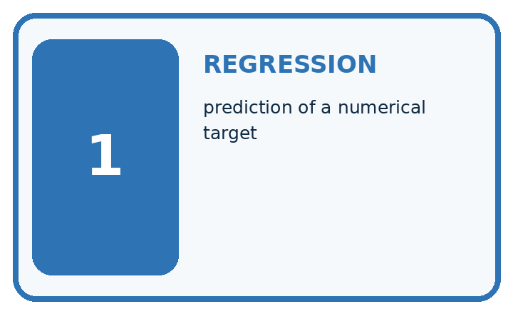
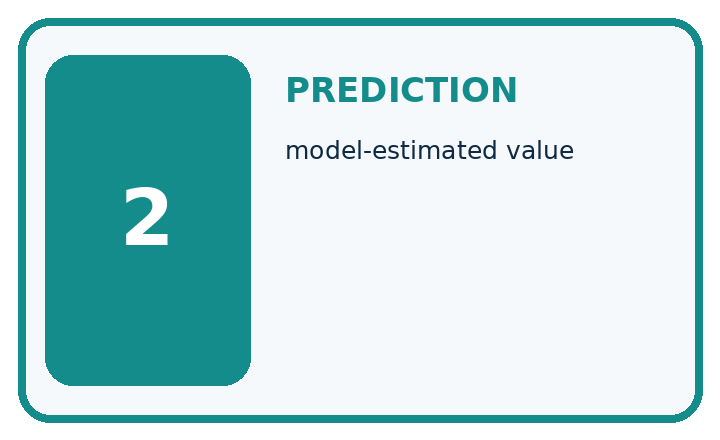
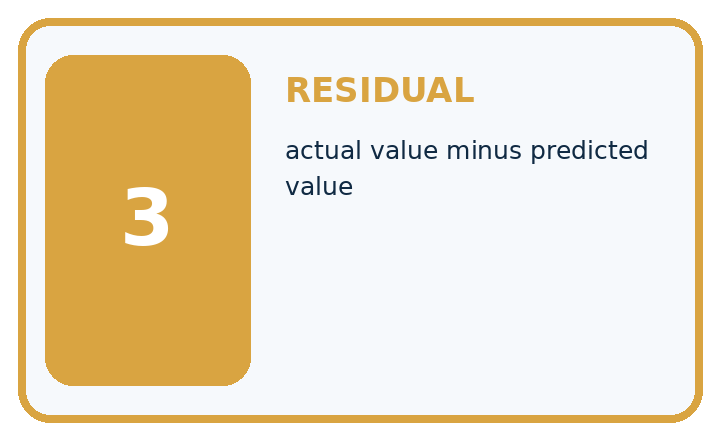
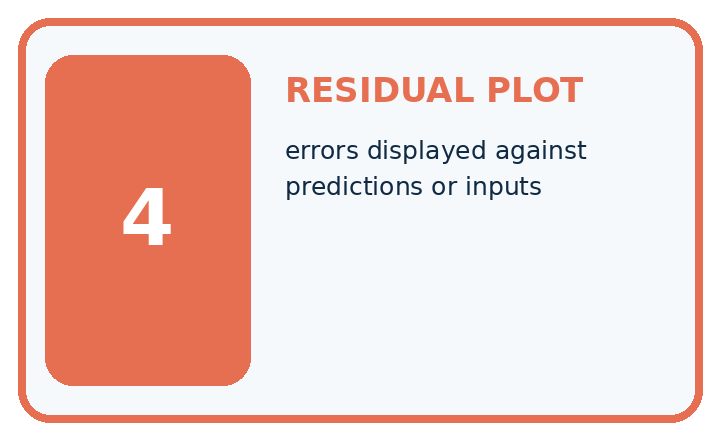
| Term | Precise meaning | My ML example |
|---|---|---|
| regression | prediction of a numerical target | |
| prediction | model-estimated value | |
| residual | actual value minus predicted value | |
| residual plot | errors displayed against predictions or inputs |
Repair the claim using a definition, calculation, or test record:
Words used in the closer explanation
| Word | Meaning |
|---|---|
| Regression | Prediction of a numeric target |
| Residual | Observed target minus predicted target in this course |
| Underprediction | A prediction below the observed value |
| Overprediction | A prediction above the observed value |
Student lesson · 6 of 16
Follow a worked example
WORKED EVIDENCE
Reason Step by Step
Predict first. Then check each step. A correct answer without visible evidence cannot be audited.
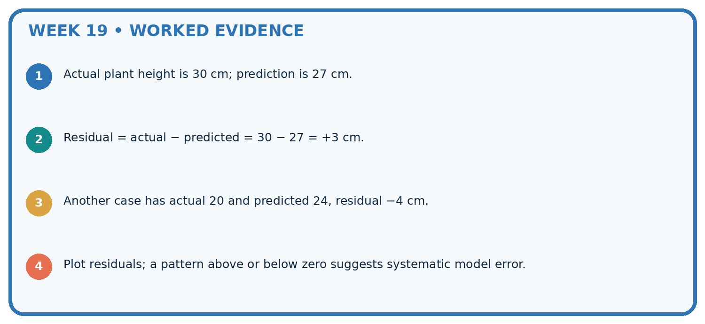
STEP 1 Actual plant height is 30 cm; prediction is 27 cm.
STEP 2 Residual = actual − predicted = 30 − 27 = +3 cm.
STEP 3 Another case has actual 20 and predicted 24, residual −4 cm.
STEP 4 Plot residuals; a pattern above or below zero suggests systematic model error.
Recalculate, retrace, or restate the evidence independently:
A closer explanation
Regression and residuals at a glance
Learn from the worked case
Cover the result before checking it. Say what is given, choose the procedure, and follow one step at a time. Then uncover the result and explain your first mismatch. Ask why a step is allowed, not only what number it produces.
A pictorial worked case: Regression and Residuals
Use residual signs to say whether each plant-height estimate is too high or low.
The facts we will use
Residual=observed-predicted. Observed heights [5, 8, 12] cm; predicted [7, 7, 10] cm.
All inputs and outcomes in this worked example are invented classroom data; no real model run is claimed.


Read the picture one step at a time
Why this result follows
Read the picture in order. Mean residual is 1/3 cm; MAE is 5/3 cm, so small signed mean does not imply small errors. The arrows show which recorded input or intermediate result each decision uses. Explain the deciding step aloud before checking the changed case; pointing to the final answer alone does not show how it follows.
What this example does not establish
Always declare the residual sign convention; some software uses predicted minus observed.
Read the labelled picture: Which statistic reveals the size of errors without cancellation? Point to the relevant step in the picture, then write the changed result and the rule or evidence that supports it.
Change one thing: Raise all predictions by1 cm. Predict the result before checking the explanation. What remains the same?
Student lesson · 7 of 16
Find and repair a mistake
ERROR DETECTIVE
Compare → Diagnose → Repair
Do not patch the answer. Find the earliest unsupported assumption, data problem, or experiment error.
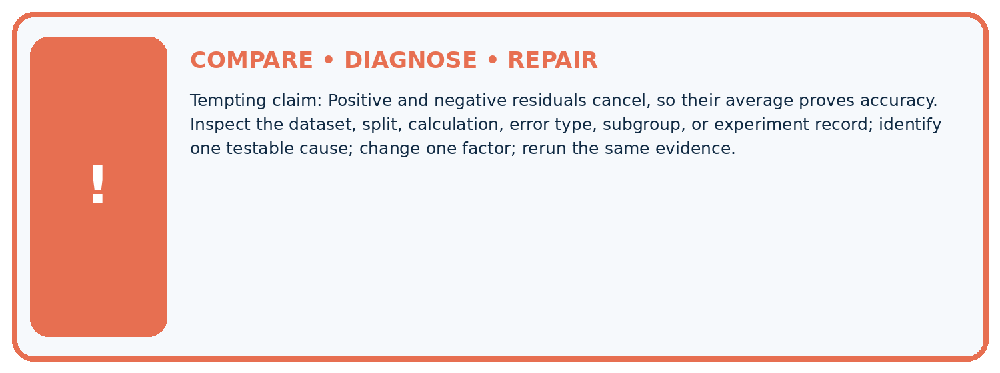
| Evidence record | Expected | Actual | Likely cause / next test |
|---|---|---|---|
| normal case | passes | ||
| boundary case | defined behavior | ||
| missing case | safe fallback | ||
| shifted case | measured limit |
Diagnose one cause and name the cleanest next experiment:
A closer explanation
A residual of zero is an agreement with the measured target, not proof that the measurement is perfect. Do not compare errors measured in cm directly with errors measured in metres. Keep the same row pairing, unit and sign convention throughout.
Student lesson · 8 of 16
Practise together
ML STUDIO
Specify Before You Run
A trustworthy result can be reproduced from the recorded data, code, settings, and evaluation rule.

Experiment record
QUESTION + intended use + success threshold
DATA version + grouped split + leakage check
CODE/preprocessing + features + model + settings + seed
METRICS + positive class + units + denominators
PREDICTIONS + errors + subgroup slices + limitations
HUMAN reviewer + release, revise, limit, or stop decision
Write the minimum record needed to reproduce today's result:
A closer explanation
If predictions for early, middle and late growth have residuals -2, 0, 3 cm, the model moves from overpredicting to underpredicting across those records. Investigate whether a straight-line assumption or a missing condition could explain it. Check measurement consistency before adding complexity.
Practise with less help: Explain cancellation
Use workbook W2 for the connected example “Regression and residuals”. First fill the input and rule boxes. Try the middle steps before asking for a hint. After a hint, try the next step yourself.
| Plan | Do | Check |
|---|---|---|
| What is given? Which rule or procedure applies? | Record each intermediate step. | Does the result follow? What remains unknown? |
Explain your trace to a partner. Your partner points to one step to check. Swap roles on the next case. Each person writes their own explanation.
Check your reasoning
Use the worked case for Regression and residuals. Proposed explanation: “A final answer is enough”. Decide whether this explanation is supported. Point to the step or supplied fact that decides; explain your repair if needed.
Answer on your own before discussion. If you are unsure, say which step you need help with.
Explain the picture
Which statistic reveals the size of errors without cancellation? Point to the relevant step in the picture, then write the changed result and the rule or evidence that supports it.
This is supported practice. Keep the separately named independent case for an attempt before feedback.
Student lesson · 9 of 16
Run the investigation
EVIDENCE LAB
Predict → Run → Calculate → Interpret
Keep the test conditions fixed, record every result, and change only one planned factor.
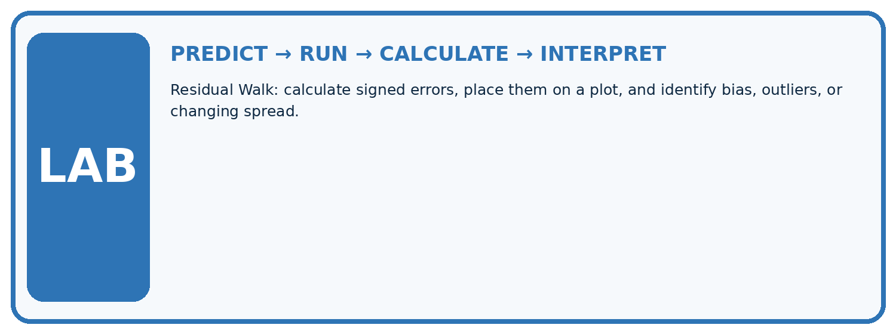
1. Write the hypothesis and expected evidence before running.
2. Residual Walk: calculate signed errors, place them on a plot, and identify bias, outliers, or changing spread.
3. Run one normal, one boundary, one missing, and one shifted case.
4. Calculate the metric from raw counts or row-level errors.
5. Interpret what changed, what did not, and what remains unsafe or unknown.
| Case | Prediction | Actual | Calculation / evidence | Meaning / next test |
|---|---|---|---|---|
| Normal | ||||
| Boundary | ||||
| Missing | ||||
| Shifted |
Plan → try → check
Before trying: what do I expect, and why? While trying: which step could first go wrong? Afterwards: what did I actually observe, and what should change? Keep “not run” if you only traced the procedure.
Student lesson · 10 of 16
Build your understanding
MASTERY
From Knowing the Word to Owning the Idea
Move upward only when you can produce evidence without copying the example.

DEFINE Use all four terms precisely: regression, prediction, residual, residual plot.
CALCULATE Reproduce the worked evidence with units and denominator.
TRACE Explain the data, code or decision path.
DIAGNOSE Positive and negative residuals cancel, so their average proves accuracy.
TRANSFER Solve a fresh dataset or model case.
IMPROVE Change one cause and rerun fixed evidence.
DEFEND State intended use, metric, limitation, and human responsibility.
Student lesson · 11 of 16
Connect your project
CUMULATIVE PROJECT
Responsible Plant Classifier
Every week adds one reviewable artifact to the same evidence-based capstone.
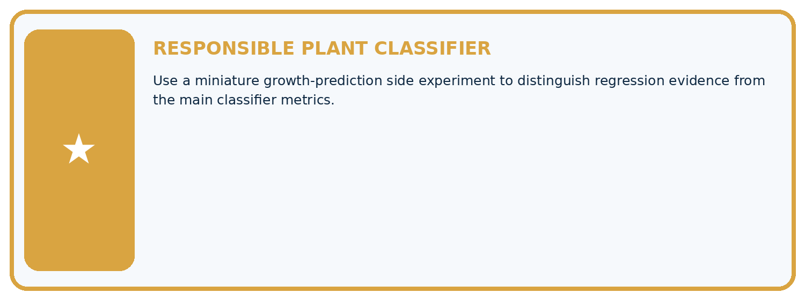
Which requirement or risk does this artifact address?
Which dataset, split, code, and metric version does it use?
What normal and shifted cases were tested?
What remains uncertain or weak?
What decision still belongs to a teacher or qualified human?
My evidence-linked project decision:
Evidence for your project
For your Responsible Plant Classifier, save the input, procedure, observed result and limitation of this check. Label this worked example as practice; use a different, previously unreviewed case when checking independent understanding.
Student lesson · 12 of 16
Show what you know
INDEPENDENT PROOF
Explain • Calculate • Transfer • Defend
Complete this with a fresh case after guided practice and compare it with the mastery criteria.
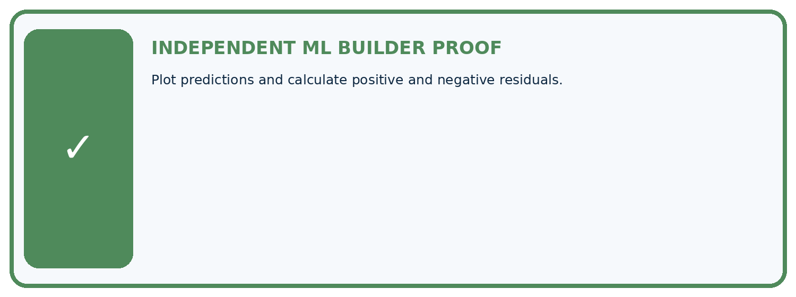
□ Define the task, feature/target roles, and intended-use boundary.
□ Show the calculation, code trace, or experiment record.
□ Test a normal case and one revealing boundary, missing, or shifted case.
□ Diagnose one failure without changing several factors at once.
□ Name a limitation, fairness concern, and the human-review action.
Independent evidence and defense:
My level: □ Not yet □ With one hint □ Independently □ I can teach and defend it
Student lesson · 13 of 16
Study a complete case
Week 19 Worked case
Use the supplied details to practise the weekly concept before attempting the independent question. This case extends the illustrated lesson.
The situation
Actual height=12 cm, prediction=9 cm. Residual means actual minus predicted.
The question
Calculate and interpret.
Worked explanation
+3 cm means underprediction by 3 cm. State this sign convention consistently.
Explain it in your own words
Which detail supports the answer, and why does it matter?
Trace the supplied case visually
Residual is actual minus predicted
| Evidence or stage | Value or result |
|---|---|
| Prediction | 9 |
| Actual | 12 |
Actual height=12 cm, prediction=9 cm. Residual means actual minus predicted.
Calculate and interpret.
+3 cm means underprediction by 3 cm. State this sign convention consistently.
Student lesson · 14 of 16
Try a new case independently
Independent case: Apply independently
Observed [6, 10, 13], predicted [8, 9, 11] cm. Give residuals, mean residual and error directions.
Attempt this case before feedback. Record any help. Earlier examples below are further practice; a case already practised with feedback cannot establish fresh transfer.
Week 19 Independent application
Close the worked explanation. Apply the idea to this different question without copying.
Define residual as actual minus predicted. Actual height is 14 cm and prediction is 17 cm. Calculate residual and interpret its sign.
My answer, with a trace, calculation or supporting evidence
Create and test
Change one relevant detail. Predict the result before testing. Include a boundary or missing-information case when it helps reveal a limit.
My changed input and expected result
Connect to your project
Use a miniature growth-prediction side experiment to distinguish regression evidence from the main classifier metrics.
The evidence I will keep
Your teacher has the independent answer and scoring criteria. Complete the matching workbook week to keep your practice evidence together.
Transfer practice from the original programme
Actual leaf length is 7 cm and prediction is 10 cm. Using residual=actual−predicted, calculate residual and absolute error. Interpret the sign.
Use feedback to improve
Attempt the independent case before hints. Record whether you worked alone, used a hint or followed a model. After feedback, fix the first unsupported step and explain why it changed. A later check uses a changed case, not a copied answer.
Student lesson · 15 of 16
Your lesson route
Start with this question: Use residual signs to say whether each plant-height estimate is too high or low.
| By the end, I can | How I will show it |
|---|---|
| Distinguish numeric prediction from classification | Explain the deciding step, show a trace or test, and state one limit. |
| Calculate signed residuals with a stated convention | Explain the deciding step, show a trace or test, and state one limit. |
| Use residual patterns to question a model | Explain the deciding step, show a trace or test, and state one limit. |
Remember → watch and explain → try with help → investigate → try independently → keep project evidence. Your teacher may spread this lesson across several classes.
Keep your first prediction. Compare it with what the evidence shows and explain any change.
Student lesson · 16 of 16
Finish and return
Close your notes. Explain this goal in your own words: Distinguish numeric prediction from classification
If you are unsure, return to the worked picture and explain one arrow. If you are ready, change an input or assumption and justify your prediction.
Save your workbook evidence. At the next review, try a different case before opening your old answer.